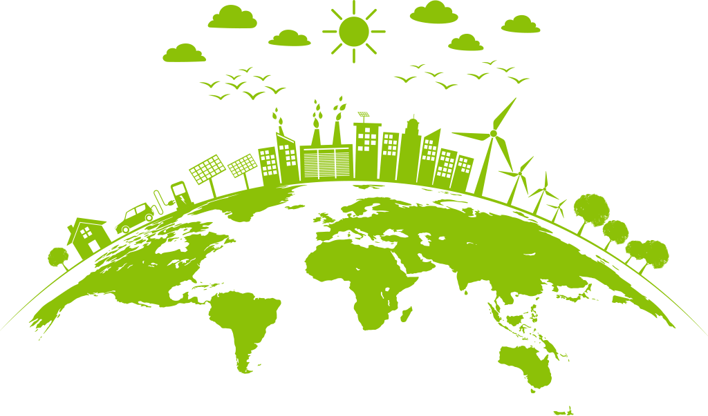
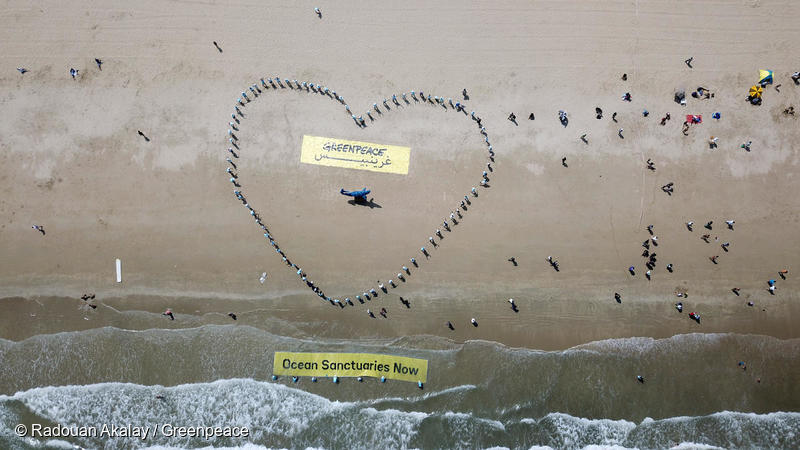
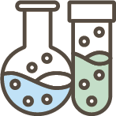
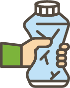
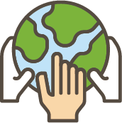
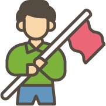

당신의 후원이 지구를 위한 변화를 만듭니다!
그린피스는 캠페인의 정치적, 재정적 독립성을 유지하기 위해 정부와 기업의 후원을 일체 받지 않으며
개인 후원자님들의 후원으로만 활동하고 있습니다.
Campaign result
기후 최신소식
개인 제트기는 이제 그만!
암스테르담 스키폴 공항의 놀라운 결정

기후 보도자료
개HD현대건설기계, “아마존 불법 금 채굴에 동원되는 중장비 판매 중단” 결정
해양 최신소식
UN 글로벌 해양조약, 드디어 해냈습니다!
글로벌 해양조약 성사!

GREENPEACE Campaign
그린피스에서 진행하는 지역 및 글로벌 캠페인에 대해 자세히 알아보세요.

GREENPEACE Core Value
지구의 목소리가 되어주세요!
그린피스는 아마존 우림에서 북극까지 인간의 손이 닿지 않는 곳을 항해하며
환경파괴 현장을 알리고,
과학적 조사와 연구를 바탕으로 환경 위기 극복을 위한 해결책을 제시하는 등 지속적 활동을 통해 변화를 만들어 가고 있습니다.

해결책 제시
우리는 건강하고 평화로운 미래를 위해 환경문제의 해결책을 찾아내고 조사해 널리 알립니다.

재정적 독립성
그린피스는 정부나 기업의 재정 지원을 받지 않습니다.

글로벌 영향력
지구촌 곳곳에서 환경을 지키기 위해 그린피스가 가진 자원을 극대화합니다.

비폭력직접행동
그린피스는 평화로운 행동이 세상을 바꾼다고 믿습니다.